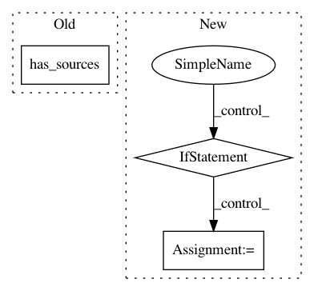

2be0b1d843e77c0fa6e74f00689ece1911211721,src/python/pants/backend/jvm/tasks/jvm_compile/rsc/rsc_compile.py,RscCompile,register_extra_products_from_contexts,#RscCompile#Any#Any#,171
Before Change
self.context.products.get_data("rsc_classpath").add_for_target(
compile_cc.target,
[(conf, compile_cc.jar_file) for conf in self._confs])
elif target.has_sources(".scala"):
pass
else:
pass
After Change
self.context.products.get_data("rsc_classpath").add_for_target(
rsc_cc.target,
[(conf, rsc_cc.rsc_mjar_file) for conf in self._confs])
elif self._metacpable(target):
// Walk the metacp results dir and add classpath entries for all the files there.
// TODO exercise this with a test.
for root, dirs, files in os.walk(rsc_cc.rsc_index_dir):
self.context.products.get_data("rsc_classpath").add_for_target(
rsc_cc.target,
[(conf, os.path.join(root, f)) for conf in self._confs for f in files]
)
else:
pass
def _metacpable(self, target):
In pattern: SUPERPATTERN
Frequency: 3
Non-data size: 3
Instances
Project Name: pantsbuild/pants
Commit Name: 2be0b1d843e77c0fa6e74f00689ece1911211721
Time: 2018-09-26
Author: nh@baroquebobcat.com
File Name: src/python/pants/backend/jvm/tasks/jvm_compile/rsc/rsc_compile.py
Class Name: RscCompile
Method Name: register_extra_products_from_contexts
Project Name: pantsbuild/pants
Commit Name: 40428ed53afd6b6f10ff2da76911ed22de266b43
Time: 2017-08-08
Author: john.sirois@gmail.com
File Name: src/python/pants/build_graph/target.py
Class Name: Target
Method Name: has_sources
Project Name: pantsbuild/pants
Commit Name: ecdbf24fcaa1c8586a3d3acc1bba87aea974d7e3
Time: 2014-05-21
Author: benjy@foursquare.com
File Name: src/python/pants/tasks/what_changed.py
Class Name: WhatChanged
Method Name: _owning_targets